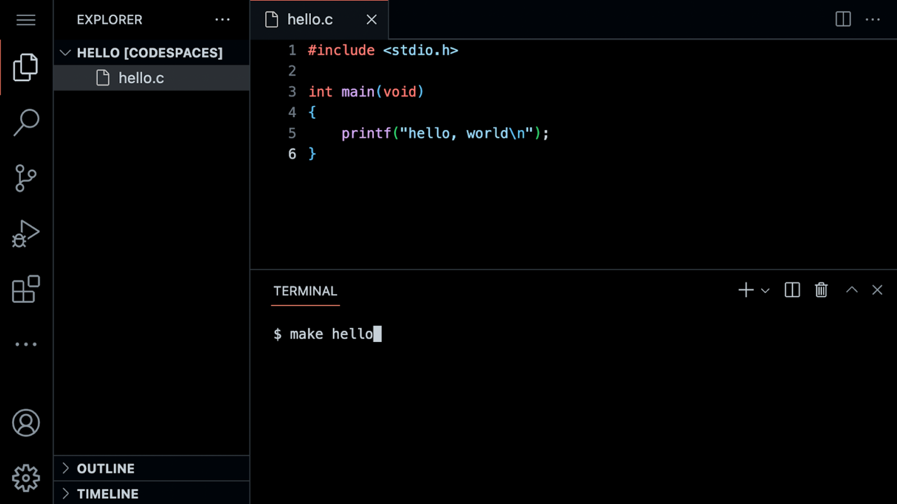

讲座 1
- 欢迎!
- 你好 世界
- Functions
- Variables
- Conditionals
- Loops
- Operators and Abstraction
- Linux and the 命令行
- 马里奥
- Comments
- Types
- Summing Up
欢迎!
- In our 上一页 session, we learned 关于 Scratch, a visual 编程 language.
- Indeed, all the essential 编程 concepts presented in Scratch will be utilized as you learn how to program any 编程 language.
- Recall that machines only understand binary. Where humans write 源代码, a list of instructions for the computer that is human readable, machines only understand what we can now call machine code. This machine code is a pattern of ones and zeros that produces a desired effect.
- It turns out that we can convert 源代码 into
machine codeusing a very special piece of software called a compiler. Today, we will be introducing you to a compiler that will allow you to convert 源代码 in the 编程 language C into machine code. - Today, in addition to learning 关于 how to code, you will be learning 关于 how to write good code.
- Code can be evaluated upon three axes. First, correctness refers to “does the code run as intended?” Second, design refers to “how well is the code designed?” Finally, style refers to “how aesthetically pleasing and consistent is the code?”
你好 世界
- The compiler that is utilized for this 课程 is Visual Studio Code, affectionately referred to as
, which can be accessed via that same url, or simply as *VS Code.* - One of the most important reasons we utilize VS Code is that it has all the software 必需 for the 课程 already pre-loaded on it. This 课程 and the instructions herein were designed with VS Code in mind.
- Manually installing the necessary software for the 课程 on your own computer is a cumbersome headache. Best always to utilize VS Code for 作业 in this 课程.
- You can 打开 VS Code 在 cs50.dev.
-
The compiler can be divided into a number of regions:

Notice that there is a file explorer on the left side where you can find your files. Further, notice that there is a region in the middle called a text editor where you can edit your program. Finally, there is acommand line interface, known as a CLI, 命令行, or terminal window where we can send commands to the computer in the cloud. -
We will be using three commands to write, compile, and run our first program:
code hello.c make hello ./helloThe first command,
code hello.ccreates a file and allows us to type instructions for this program. The second command,make hello, compiles the file from our instructions in C and creates an executable file calledhello. The last command,./hello, runs the program calledhello. -
We can build your first program in C by typing
code hello.cinto the terminal window. Notice that we deliberately lowercased the entire filename and included the.cextension. Then, in the text editor that appears, write code as follows:#include <stdio.h> int main(void) { printf("hello, world\n"); }笔记 that every single character above serves a purpose. If you type it incorrectly, the program will not run.
printfis a function that can output a line of text. Notice the placement of the quotes and the semicolon. Further, notice that the\ncreates a 新内容 line after the wordshello, world. - Clicking 返回 in the terminal window, you can compile your code by executing
make hello. Notice that we are omitting.c.makeis a compiler that will look for ourhello.cfile and turn it into a program calledhello. If executing this command results in no errors, you can proceed. If not, double-check your code to ensure it matches the above. - Now, type
./helloand your program will execute sayinghello, world. - Now, 打开 the file explorer on the left. You will notice that there is now both a file called
hello.cand another file calledhello.hello.cis able to be 阅读 by the compiler: It’s where your code is stored.hellois an executable file that you can run, but cannot be 阅读 by the compiler.
Functions
- In Scratch, we utilized the
sayblock to display any text on the screen. Indeed, in C, we have a function calledprintfthat does exactly this. -
Notice our code already invokes this function:
printf("hello, world\n");Notice that the printf function is called. The argument passed to printf is ‘你好, 世界\n’. The statement of code is closed with a
;. -
A common error in C 编程 is the omission of a semicolon. Modify your code as follows:
#include <stdio.h> int main(void) { printf("hello, world\n") }Notice the semicolon is now gone.
- In your terminal window, run
make hello. You will now be met with numerous errors! Placing the semicolon 返回 in the correct position and runningmake helloagain, the errors go away. - Notice also the special symbol
\nin your code. Try removing those characters and making your program again by executingmake hello. Typing./helloin the terminal window, how did your program change? This\character is called an escape character that tells the compiler that\nis a special instruction. -
Restore your program to the following:
#include <stdio.h> int main(void) { printf("hello, world\n"); }Notice the semicolon and
\nhave been restored. - The statement 在 the 开始 of the code
#include <stdio.h>is a very special command that tells the compile that you want to use the capabilities of a library calledstdio.h, a header file. This allows you, among many other things, to utilize theprintffunction. You can 阅读 关于 all the capabilities of this library on the Manual Pages. The Manual Pages provide a means by which to better understand what various commands do and how they function. - Libraries are collections of pre-written functions that others have written in the past that we can utilize in our code.
- It turns out that CS50 has its own library called
cs50.h. Let’s use this library in your program.
Variables
- Recall that in Scratch, we had the ability to ask the user “What’s your 姓名?” and say “你好” with that 姓名 appended to it.
-
In C, we can do the same. Modify your code as follows:
#include <stdio.h> int main(void) { string answer = get_string("What's your name? "); printf("hello, %s\n", answer); }The
get_stringfunction is used to get a string from the user. Then, the variableansweris passed to theprintffunction.%stells theprintffunction to prepare itself to receive astring. -
answeris a special holding place we call a variable.answeris of typestringand can hold any string within it. There are many data types, such asint,bool,char, and many others. -
%sis a placeholder called a format code that tells theprintffunction to prepare to receive astring.answeris thestringbeing passed to%s. - Running
make helloagain in the terminal window, notice that numerous errors appear. -
Looking 在 the errors
stringandget_stringare not recognized by the compiler. We have to teach the compiler these features by adding a library calledcs50.h:#include <cs50.h> #include <stdio.h> int main(void) { string answer = get_string("What's your name? "); printf("hello, %s\n", answer); }Notice that
#include <cs50.h>has been added to the top of your code. - Now running
make helloagain in the terminal window, you can run your program by typing./hello. The program now asks for your 姓名 and then says 你好 with your 姓名 attached, as intended. -
printfallows for many format codes. Here is a noncomprehensive list of ones you 五月 utilize in this 课程:%c %f %i %li %s%sis used forstringvariables.%iis used forintor integer variables. You can find out 更多 关于 this on the Manual Pages
Conditionals
- Another building block you utilized within Scratch was that of conditionals. For 示例, you might want to do one thing if x is greater than y. Further, you might want to do something else if that condition is not met.
- We look 在 a few 示例 from Scratch.
-
In C, you can assign a value to an
intor integer as follows:int counter = 0;Notice how a variable called
counterof typeintis assigned the value0. -
C can also be programmed to add one to
counteras follows:counter = counter + 1;Notice how
1is added to the value ofcounter. -
This can be represented also as:
counter = counter++;Notice how
1is added to the value ofcounter. However the++is used instead ofcounter + 1. -
You can also subtract one from
counteras follows:counter = counter--;Notice how
1is removed to the value ofcounter. - Using this 新内容 knowledge 关于 how to assign values to variables, you can program your first conditional statement.
-
In the terminal window, type
code compare.cand write code as follows:#include <cs50.h> #include <stdio.h> int main(void) { int x = get_int("What's x? "); int y = get_int("What's y? "); if (x < y) { printf("x is less than y\n"); } }Notice that we create two variables, an
intor integer calledxand another calledy. The values of these are populated using theget_intfunction. - You can run your code by executing
make comparein the terminal window, followed by./compare. If you get any error messages, check your code for errors. - Flow charts are a way by which you can examine how a computer program functions. Such charts can be used to examine the efficiency of our code.
- Looking 在 a flow chart of the above code, we can notice numerous shortcomings.
-
We can improve your program by coding as follows:
#include <cs50.h> #include <stdio.h> int main(void) { int x = get_int("What's x? "); int y = get_int("What's y? "); if (x < y) { printf("x is less than y\n"); } else if (x > y) { printf("x is greater than y\n"); } else { printf("x is equal to y\n"); } }Notice that all potential outcomes are now accounted for.
- You can re-make and re-run your program and test it out.
- Examining this program on a flow chart, you can see the efficiency of our code design decisions.
- Considering another data type called a
charwe can 开始 a 新内容 program by typingcode agree.cinto the terminal window. - Where a
stringis a series of characters, acharis a single character. -
In the text editor, write code as follows:
#include <cs50.h> #include <stdio.h> int main(void) { // Prompt user to agree char c = get_char("Do you agree? "); // Check whether agreed if (c == 'Y' || c == 'y') { printf("Agreed.\n"); } else if (c == 'N' || c == 'n') { printf("Not agreed.\n"); } }Notice that single quotes are utilized for single characters. Further, notice that
==ensure that something is equal to something else, where a single equal sign would have a very different function in C. Finally, notice that||effectively means or. - You can test your code by typing
make agreeinto the terminal window, followed by./agree.
Loops
- We can also utilize the loops building block from Scratch in our C programs.
-
We look 在 a few 示例 from Scratch. Consider the following code:
int counter = 3; while (counter > 0) { printf("meow\n"); counter = counter - 1; }Notice that his code assigns the value of
3to thecountervariable. Then, thewhileloop saysmeowand removes one from the counter for each iteration. Once the counter is not greater than zero, the loop ends. -
In your terminal window, type
code meow.cand write code as follows:#include <stdio.h> int main(void) { printf("meow\n"); printf("meow\n"); printf("meow\n"); }Notice this does as intended but has an opportunity for better design.
-
We can improve our program by modifying your code as follows:
#include <stdio.h> int main(void) { int i = 3; while (i > 0) { printf("meow\n"); i--; } }Notice that we create an
intcallediand assign it the value3. Then, we create awhileloop that will run as long asi > 0. Then, the loop runs. Every 时间1is subtracted toiusing thei--statement. -
Similarly, we can implement a count-up of sorts by modifying our code as follows:
#include <stdio.h> int main(void) { int i = 1; while (i <= 3) { printf("meow\n"); i++; } }Notice how our counter
iis started 在3. Each 时间 the loop runs, it will increment the counter by1. Once the counter is greater than or equal to three, it will stop the loop. -
Generally, in 计算机科学 we count from zero. Best to revise your code as follows:
#include <stdio.h> int main(void) { int i = 0; while (i < 3) { printf("meow\n"); i++; } }Notice we now count from zero.
- Another 工具 in our toolbox for looping is a
forloop. -
You can further improve the design of our
meow.cprogram using aforloop. Modify your code as follows:#include <stdio.h> int main(void) { for (int i = 0; i < 3; i++) { printf("meow\n"); } }Notice that the
forloop includes three arguments. The first argumentint i = 0starts our counter 在 zero. The second argumenti < 3is the condition that is being checked. Finally, the argumenti++tells the loop to increment by one each 时间 the loop runs. -
We can even loop forever using the following code:
#include <cs50.h> #include <stdio.h> int main(void) { while (true) { printf("meow\n"); } }Notice that
truewill always be the case. Therefore, the code will always run. You will lose control of your terminal window by running this code. You can break from an infinite by hittingcontrol-Con your keyboard. -
While we will provide much 更多 guidance later, you can create your own function within C as follows:
void meow(void) { printf("meow\n"); }The initial
voidmeans that the function does not return any values. The(void)means that no values are being provided to the function. -
This function can be used in the main function as follows:
#include <stdio.h> void meow(void); int main(void) { for (int i = 0; i < 3; i++) { meow(); } } void meow(void) { printf("meow\n"); }Notice how the
meowfunction is called with themeow()instruction. 这是 possible because themeowfunction is defined 在 the bottom of the code and the prototype of the function is provided 在 the top of the code asvoid meow(void). -
Your
meowfunction can be further modified to accept input:#include <stdio.h> void meow(int n); int main(void) { meow(3); } // Meow some number of times void meow(int n) { for (int i = 0; i < n; i++) { printf("meow\n"); } }Notice that the prototype has changed to
void meow(int n)to show thatmeowaccepts anintas its input.
Operators and Abstraction
-
You can implement a calculator in C. In your terminal, type
code calculator.cand write code as follows:#include <cs50.h> #include <stdio.h> int main(void) { // Prompt user for x int x = get_int("x: "); // Prompt user for y int y = get_int("y: "); // Perform addition printf("%i\n", x + y); }Notice how the
get_intfunction is utilized to obtain an integer from the user twice. One integer is stored in theintvariable calledx. Another is stored in theintvariable calledy. Then, theprintffunction prints the value ofx + y, designated by the%isymbol. -
Operators refer to the mathematical operations that are supported by your compiler. In C, these mathematical operators include:
-
+for addition -
-for subtraction -
*for multiplication -
/for division -
%for remainder
-
- Abstraction is the art of simplifying our code such that it deals with smaller and smaller 问题.
-
Expanding on our previously acquired knowledge 关于 functions, we could abstract away the addition into a function. Modify your code as follows:
#include <cs50.h> #include <stdio.h> int add(int a, int b); int main(void) { // Prompt user for x int x = get_int("x: "); // Prompt user for y int y = get_int("y: "); // Perform addition int z = add(x, y); printf("%i\n", z); } int add(int a, int b) { int c = a + b; return c; }Notice that the
addfunction takes two variables as its input. These values are assigned toaandband preforms a calculation, returning the value ofc. Further, notice that the scope (or context in which variables exist) ofxis themainfunction. The variablecis only within the scope of theaddfunction. -
The design of this program can be further improved as follows:
#include <cs50.h> #include <stdio.h> int add(int a, int b); int main(void) { // Prompt user for x int x = get_int("x: "); // Prompt user for y int y = get_int("y: "); // Perform addition printf("%i\n", add(x, y)); } int add(int a, int b) { return a + b; }Notice that
cin theaddfunction is removed entirely. -
While very useful to be able to abstract away to an
addfunction, you can also perform addition through truncation as follows:#include <cs50.h> #include <stdio.h> int main(void) { // Prompt user for x long x = get_long("x: "); // Prompt user for y long y = get_long("y: "); // Perform addition printf("%li\n", x + y); }Notice that the addition is performed within the
printffunction. -
Similarly, division can be performed as follows:
#include <cs50.h> #include <stdio.h> int main(void) { // Prompt user for x int x = get_int("x: "); // Prompt user for y int y = get_int("y: "); // Divide x by y printf("%i\n", x / y); }Notice that division is performed within the
printffunction.
Linux and the 命令行
- Linux is an operating system that is accessible via the 命令行 in the terminal window in VS Code.
- Some common command-line arguments we 五月 use include:
-
cd, for changing our current directory (folder) -
cp, for copying files and directories -
ls, for listing files in a directory -
mkdir, for making a directory -
mv, for moving (renaming) files and directories -
rm, for removing (deleting) files -
rmdir, for removing (deleting) directories
-
- The most commonly used is
lswhich will list all the files in the current directory or directory. Go ahead and typelsinto the terminal window and hitenter. You’ll see all the files in the current folder. - Another useful command is
mv, where you can move a file from one file to another. For 示例, you could use this command to renameHello.c(notice the uppercaseH) tohello.cby typingmv Hello.c hello.c. - You can also create folders. You can type
mkdir pset1to create a directory calledpset1. - You can then use
cd pset1to change your current directory topset1.
马里奥
- Everything we’ve discussed today has focused on various building-blocks of your work as an emerging computer scientist.
- The following will help you orient toward working on a 问题集 for this class in general: How does one approach a 计算机科学 related 问题?
-
Imagine we wanted to emulate the visual of the game Super 马里奥 Bros. Considering the four 问题-blocks pictured, how could we create code that roughly represents these four horizontal blocks?

-
In the terminal window, type
code mario.cand code as follows:#include <stdio.h> int main(void) { for (int i = 0; i < 4; i++) { printf("?"); } printf("\n"); }Notice how four 问题 marks are printed here using a loop.
-
Similarly, we can apply this same logic to be able to create three vertical blocks.

-
To accomplish this, modify your code as follows:
#include <stdio.h> int main(void) { for (int i = 0; i < 3; i++) { printf("#\n"); } }Notice how three vertical bricks are printed using a loop.
-
What if we wanted to combine these ideas to create a three-by-three group of blocks?

-
We can follow the logic above, combining the same ideas. Modify your code as follows:
#include <stdio.h> int main(void) { for (int i = 0; i < 3; i++) { for (int j = 0; j < 3; j++) { printf("#"); } printf("\n"); } }Notice that one loop is inside another. The first loop defines what vertical row is being printed. For each row, three columns are printed. After each row, a 新内容 line is printed.
-
What if we wanted to ensure that the number of blocks to be constant, that is, unchangeable? Modify your code as follows:
int main(void) { const int n = 3; for (int i = 0; i < n; i++) { for (int j = 0; j < n; j++) { printf("#"); } printf("\n"); } }Notice how
nis now a constant. It can never be changed. -
As illustrated earlier in this 讲座, we can make our code prompt the user for the size of the grid. Modify your code as follows:
#include <cs50.h> #include <stdio.h> int main(void) { int n = get_int("Size: "); for (int i = 0; i < n; i++) { for (int j = 0; j < n; j++) { printf("#"); } printf("\n"); } }Notice that
get_intis used to prompt the user. -
A general piece of advice within 编程 is that you should never fully trust your user. They will likely misbehave, typing incorrect values where they should not. We can protect our program from bad behavior by checking to make sure the user’s input satisfies our needs. Modify your code as follows:
#include <cs50.h> #include <stdio.h> int main(void) { int n; do { n = get_int("Size: "); } while (n < 1); for (int i = 0; i < n; i++) { for (int j = 0; j < n; j++) { printf("#"); } printf("\n"); } }Notice how the user is continuously prompted for the size until the user’s input is 1 or greater.
Comments
- Comments are fundamental parts of a computer program, where you leave explanatory remarks to yourself and others that 五月 be collaborating with you regarding your code.
- All code you create for this 课程 must include robust comments.
- Typically each comment is a few words or 更多, providing the reader an opportunity to understand what is happening in a specific block of code. Further, such comments serve as a reminder for you later when you need to revise your code.
-
Comments involve placing
//into your code, followed by a comment. Modify your code as follows to integrate comments:#include <cs50.h> #include <stdio.h> int main(void) { // Prompt user for positive integer int n; do { n = get_int("Size: "); } while (n < 1); // Print an n-by-n grid of bricks for (int i = 0; i < n; i++) { for (int j = 0; j < n; j++) { printf("#"); } printf("\n"); } }Notice how each comment begins with a
//.
Types
- One of C’s shortcomings is the ease by which it managing 内存. While C provides you immense control over how 内存 is utilized, programmers have to be very aware of potential pitfalls of 内存 management.
- Types refer to the possible data that can be stored within a variable. For 示例, a
charis designed to accommodate a single character likeaor2. - Types are very important because each type has specific limits. For 示例, because of the limits in 内存, the highest value of an
intcan be4294967295. If you attempt to count aninthigher, integer overflow will result where an incorrect value will be stored in this variable. - The number of bits limits how high and low we can count.
-
Types with which you might interact during this 课程 include:
-
bool, a Boolean expression of either true or false -
char, a single character like a or 2 -
double, a floating-point value with 更多 digits than a float -
float, a floating-point value, or real number with a decimal value -
int, integers up to a certain size, or number of bits -
long, integers with 更多 bits, so they can count higher than an int -
string, a string of characters
-
- As you are coding, pay special attention to the types of variables you are using to avoid 问题 within your code.
- We examined some 示例 of disasters that can occur through 内存-related errors.
Summing Up
In this lesson, you learned how to apply the building blocks you learned in Scratch to the C 编程 language. You learned…
- How to create your first program in C.
- Predefined functions that come natively with C and how to implement your own functions.
- How to use variables, conditionals, and loops.
- How to approach abstraction to simplify and improve your code.
- How to approach 问题-solving for a 计算机科学 问题.
- How to use the Linux 命令行.
- How to integrate comments into your code.
- How to utilize types and operators.
See you 下一页 时间!